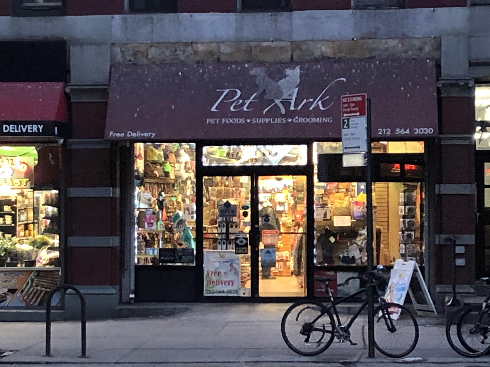

k // a
KAREN EL ASMAR
Week 6
Assignment Brief Part I:
At the Central Park Zoo, choose any animal from the available zoo exhibits. Do a pen/paper ethogram. Make a homunculus diagram (cortical magnification illustration/sketch) for the same animal you observed.
Team of 2
Assignment Brief Part II:
Observe and document animal behavior, human-animal interaction, tools used to interact with animals and human-centric vs animal-centric products at a local pet store.
Team of 3
Part I: At the Zoo

During the field trip to the Central Park Zoo, I really wanted to observe a frog at first. However, after seeing the Cotton-Top Tamarin, I thought that this animal is so unfamiliar to me and decided to observe it instead. I was so tempted to google first about this animal to better understand its actions, however, I then decided to learn its movements and interactions by observing it and noting its behavior.
The following image shows the ethogram I did while at the zoo.
Also, after observing the Tamarin for 30 minutes, a trainer walked into the display area and tried to train and feed these animals. The trainer had a cage and some snacks and would place the snacks inside the cage and tap on the edge of the cage to invite the Tamarin to get into the cage. The Tamarins were resisting and trying to reach for the snack while keeping their bodies outside of the cage. The trainer then closed the cage and left. I did not really understand what she was doing; at first, I thought she was trying to take the Tamarins away, however, she simply left them there and left after giving them snacks.
I remember the zookeeper who was showing us around said something about giving these animals always the choice to do whatever they want. I think the trainer really wanted to take them away, however, after seeing the Tamarins resist, she let them stay.

Homunculus Diagram
Based on my initial observations, I think the main sensory organs of these Tamarins are their hands and feet - they jump and cling to branches a lot, their tail - they balance themselves with their very long tails, heir eyes - they spend a lot of their time looking around and possibly their tongues - they lick a lot.
Part II: Local Stores / Urban Wild Survey
For this assignment, my teammates, Zihao and Jerry, and I, visited 3 pet stores: Citipups, Pet Central and Pet Ark.
While walking around in these stores, our main observation was that these stores mostly have food products. The toys in these stores are mostly for feeding purposes and “to extend play time”. Very few, if any, have toys that are oriented towards other sorts of enrichment. Also, we realized that the object’s appearance is what is mainly human-centric while the function is usually what relates more to animals. We realized this in several of the products when we were analysing the shape and color of the products in respect to how it functions and to which animal it is designed for.
1. What are the tools used to interact with animals at these places?
Tools
We divided the tools at these stores into 3 main categories: Toys/ Gadget/ Devices, Window Display and Physical Structures in the store.
Toys/ Gadget and Devices
The table below summarizes our observations and analyses of the devices and toys sold at these stores.

Window display
We also noticed that the window display serves as an important tool for human-animal interactions in these shops. Pet Central and Pet Ark only sell pet supplies, hence, for that, their window displays simply shows these devices. Yet, in Citipups, for example, we found that its storefront was displaying puppies. The chamber these puppies were in was well organized with shredded paper bedding, water bottles, food and toys. Passer-bys of this shop usually would stop and tap on the windows to interact with the dogs through the glass. We also noticed that the puppies displayed in the window do not look very happy and rather look upset, tired and frustrated.



Display Wall & Fence:
In this shop as well, Citipups, there was a wall that displayed all the dogs available. Customers were invited to pick a dog and sit in a little fence where the shop assistant would get the chosen puppy from its cage to interact with the people. We think that the puppies really enjoyed this moment as they felt more free and were able to run around, play and be petted.

2. Which products are human-centric vs animal-centric and why?
We realized that most products are oriented towards aesthetically pleasing the owner of these pets first rather than the pet itself. We are not against having products that are “cute” and “adorable” for the owner to enjoy but this becomes a problem when these objects are more focused on pleasing the owner rather than being functional or enriching for the actual user, the pets. For instance, one of the toys we saw is a see-saw structure for cats that allows an abstract doll to pop up from different sides whenever a cat touches it. This toy is obviously important for cats as it triggers their instinct to hunt, plays on their curiosity and entertains them. Yet, the box itself is brown with a yellow decoration on it and within in, each of the see-saw edges is decorated with a blue, abstract, and fluffy “mouse” doll. We wondered whether cats have the ability to recognize and understand the abstract characters, the colors or even the decoration on the box or whether the design was merely for human entertainment (cat chasing a mouse) and the function and performance was what entertained the cat.
Moreover, based on this and other observations, we were able to classify the products into two main categories — toys for pets’ independent self-entertainment and toys for human-pet interaction. The products of the first category are rather the products that do not involve human interaction and that perform a function without human intervention: such as the auto-feeder or the ball auto-launcher. These designs, we thought, are mostly, from a functional perspective, animal-centric. The shape and color of which, though, is debatable. The questions we considered while observing were: “What texture would dogs/cats/birds prefer?”, “What potential natural behaviors of dogs/cats/birds can be potentially or actually stimulated and trained with these device?” and “Does this product really enrich these behaviors? If yes, how so? And if not, what is missing?”
Furthermore, the products in the second category, were strongly more human-centric than animal-centric. These products were designed with human convenience and human familiarity in mind. For example, we think that one of the toys very closely resembles the handle for the toilet brush. However, this product, instead of having a brush at the end, has a place where a ball can fit so that the owner can easily, with the least physical effort possible, collect the ball and throw it again.

3. How would you reassess/redesign some of these products?
We noticed a tendency and potential for designing electronic products for these pets. The question, however, lays in how to teach these pets to use such products, like the ball auto-launcher, for instance. This automatic ball launcher has an exciting external design and the image displayed on the box shows an extremely happy dog running towards it. We highly doubt that dogs will run back towards this device as they would when they run towards their owners. Also, we don’t really think that the hard material used in these products is suitable as it has the potential to hurt the dogs “rushing” towards it. Because of all this, we think that there is potential for such devices, however, this one in particular did not really fully consider the dog as the user but rather was created with the same approaches, techniques and materials that we would design for humans.
Also, a lot of the products found at these stores rather do not take into consideration the sensory limitations or abilities of the pets they’re designed for. Specifically, we think that some of the toys could be rethought in terms of their color, their texture and even the way they play their functions. We understand the need to make these products pleasing for their users so that they buy them but we believe that by doing so, these objects are compensating on the needs or the possibilities of enrichment for the animals and can be easily redesigned from an animal’s perspective.
4. How can some of the products in the stores, farms be relevant to animals in the urban wild?
We think that the modular track toy could be “hacked” and re-adapted to be used by larger animals for different purposes such as feeding, entertainment or even mental training. Also, auto-feeders and ball auto-launchers are great tools to feed and entertain pets without human intervention in the urban wild. However, when introducing such products into the urban wild, we think the following points should be taken into consideration:
Maintenance: The products found at the store are usually maintained largely by the owner. When introduced into the wild, these products have to be redesigned to not really require maintenance as much. These devices could possibly be integrated into the infrastructure of a city.
Scope: When introducing into the urban wild, the basic function of these devices can come from the products at the store. However, the scope must be different. Products at the store are made to be used in homes or in backyards. When in the urban wild, these objects are put into larger spaces like parks and streets or even stations. On this larger scale, these products, rather than be independent single products, can become systems that interact together and with the animals using them.
Participants: In these stores, the toys are usually done for a one-to-one interaction between the human and the pet. However, when in the urban wild, we think that more “touch points” should be provided and these products should be designed in a way to allow more users (whether humans or animals) to interact with them.
Blending in: Also, the way that this system blends into the environment and surroundings is very important. Possibly, the colors and textures used at the pet store must be rethought when introduced into the wild.
Designating Spaces: In terms of space, we think that the layout used in the Citipups store, the fence, is actually being adapted and used in parks where a certain area is fenced and designated for owners to play with their puppies.